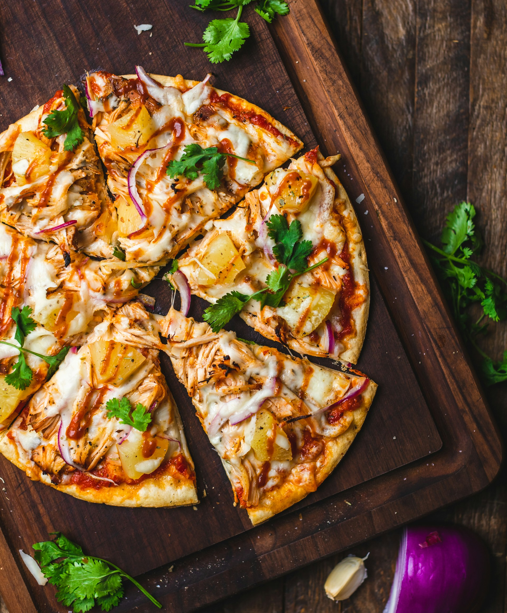

Thin Crust Pizza

Photo by Chad Montano
on Unsplash
Description
A thin crust pizza is crisp, light, and perfectly balanced,
featuring a delicate, crackly base that lets the toppings shine.
bite delivers a satisfying crunch followed by rich sauce, melted
cheese, and your favorite toppings without feeling heavy.
- Crisp, golden-brown crust
- Light texture with a slight chew
- Even distribution of toppings in every bite
Ingredients
- 1 teaspoon active dry yeast
- ¼ teaspoon white sugar
- ¾ cup lukewarm water
- 2 cups all-purpose flour, divided
- ½ teaspoon salt
Steps
- Step 1 Prepare and measure all ingredients.
- Step 2 In a small bowl, combine warm water (110°F / 44°C) with yeast and sugar. Let it sit for 5–8 minutes until it becomes foamy.
- Step 3 In a large bowl, mix 1 3/4 cups of flour with the salt. Add the yeast mixture and stir until a dough forms.
- Step 4 Move the dough onto a floured surface and knead for about 2 minutes until smooth. If the dough feels sticky, gradually add the remaining 1/4 cup of flour.
- Step 5 Roll the dough out into a 12-inch circle and place it onto a greased pizza pan.
- Step 6 Add your desired toppings, then bake until the crust is golden and cooked through. Serve and enjoy.
Home